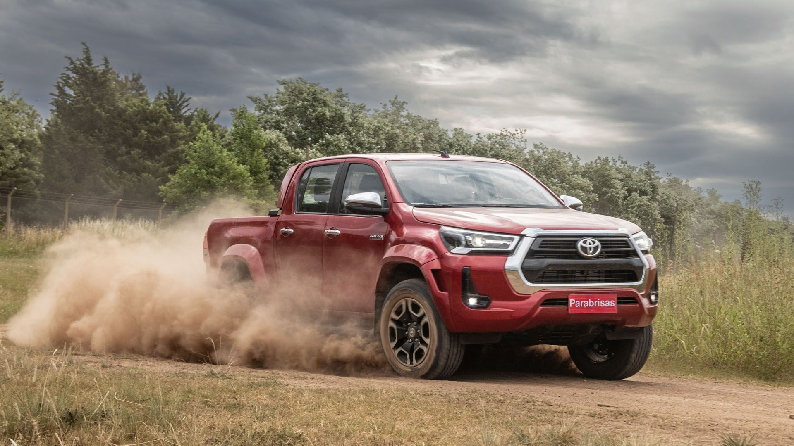
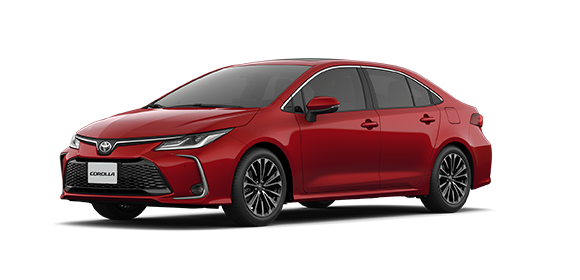
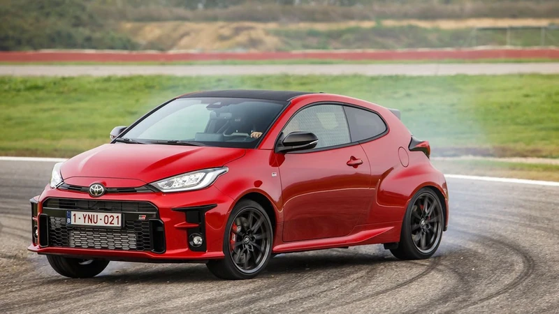

Toyota
Japón, japón. Irrompibles.
Hilux
- Motor: 2.4 tdi 204cv (3400rpm)
- Tranmision: At de 6 vel. o Mt. de 6 vel.
- Traccion: 4x4 o 4x2
- Personalidad: 5
Corolla
- Motor: 2.0 4cyl. Nafta 16v 171cv (6600rpm), ademas cuenta con un sistema hibrido autorecargable con un motor de 72cv.
- Transmision: At CVT(correa) de 10 vel.
- Traccion: FWD
- Personalidad: 3
Yaris GR
- Motor: 1.6T 3cyl. Nafta 12v 272cv (6500rpm), el motor 3 cilindors mas potente de la historia.
- Tranmision: Mt de 6 vel.
- Traccion: AWD GR Four con dos diferenciales torsen.
- Personalidad: 9
Corolla GR
- Motor: 1.6T 3cyl. Nafta 12v 304cv (6500rpm)
- Tranmision: Mt de 6 vel.
- Traccion: AWD GR Four con dos diferenciales torsen.
- Personalidad: 9
GR86
- Motor: 2.4 4cyl. en disposicion Boxer Nafta 237cv(7.000rpm) .
- Tranmision: Mt de 6 vel.
- Traccion: RWD
- Personalidad: 8
-

-

-
